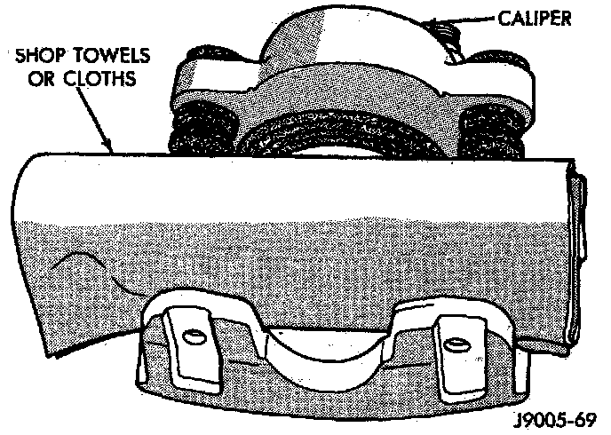
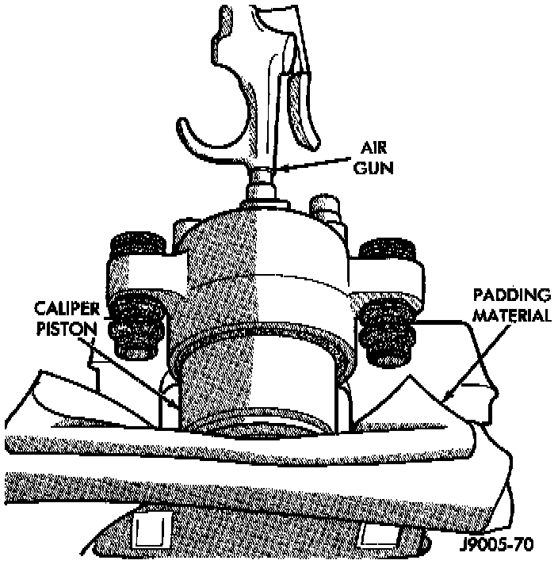
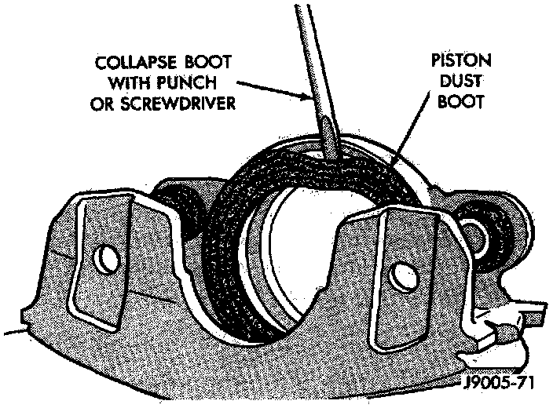
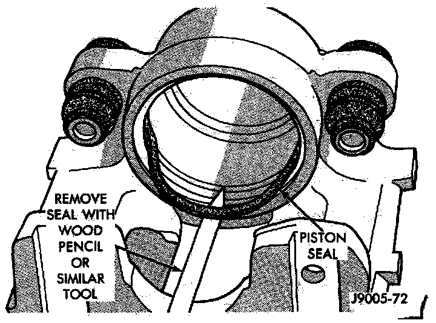
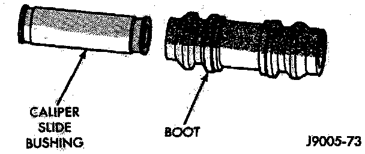

Disassembly
1. Remove brake shoes from caliper.2. Drain brake fluid out of caliper.
Padding Piston:

3. Pad interior of caliper with minimum, 2.54 cm (1 inch) thickness of shop towels or rags. Towels are needed to protect caliper piston during removal.
Caliper Piston Removal:

4. Remove caliper piston with short bursts of low pressure compressed air. Direct air through fluid inlet port and ease piston out of bore.
WARNING: Do not blow the piston out of the bore with sustained air pressure. This could result in a cracked piston. Use only enough air pressure to ease the piston out. NEVER attempt to catch the piston as it leaves the bore. This will result in personal injury.
Removing Dust Boot:

5. Remove caliper piston dust boot with suitable tool and discard boot.
Remove Piston Seal:

6. Remove caliper piston seal with wood or plastic tool and discard seal.
CAUTION: Do not use metal tools as they will scratch piston bore.
Slide Bushing And Boot:

7. Remove caliper mounting bolt bushings and boots.